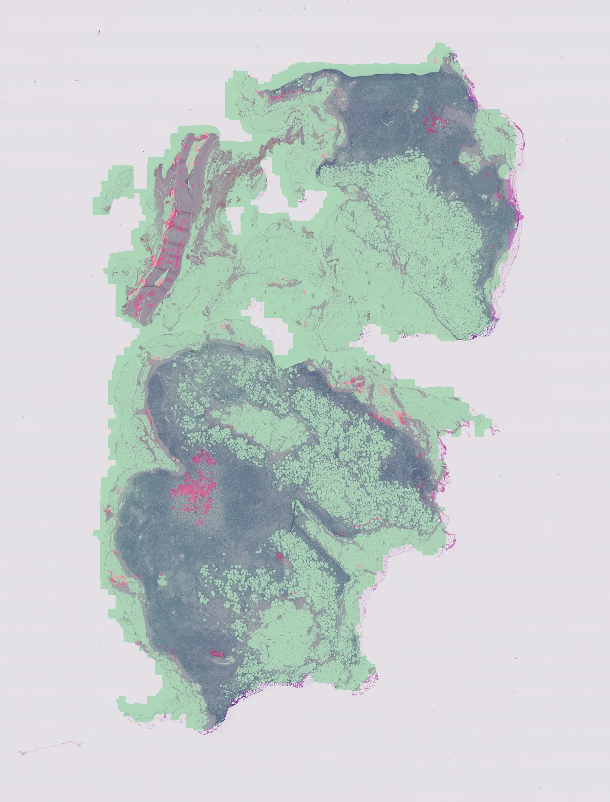
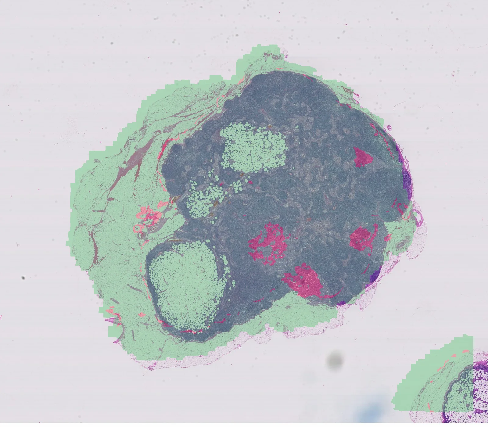
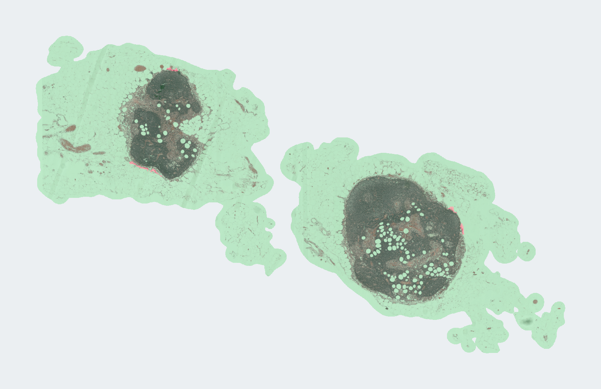
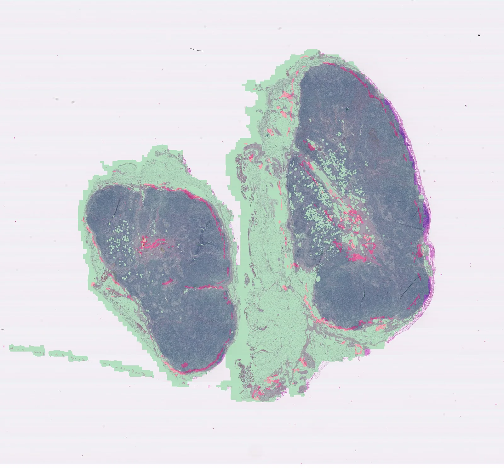

tumor_084
Metastasis-positive reference · seven matched panels · full overview and nine zooms
BORA · BENCHMARK VIEWER
A selected eight-slide binary-metastasis technical study. Only tumor_093 and normal_093 were used for CAMELYON16-specific fitting; tumor_084, tumor_091, normal_019, tumor_075, normal_108 and normal_150 were held for scoring. Original whole-slide images remain with the AWS source.
Official mask codes 1 and 2 provide the known-pixel denominator: nonmetastatic tissue and metastasis. Code 0 is unscored. The three metastasis-positive test slides have 104,761, 153,274 and 155,007 positive pixels on the 4 µm comparison grid; the three benign controls have none. Predictions are shown natively and after clipping to the same H&E-only tissue support. For five unchanged slides, known official pixels outside support remain in their historical score denominators; the post hoc normal_019 correction scores only known pixels inside its revised tissue area. All five displayed methods completed all six selected test slides: 30 of 30 method-slide scores passed independent audit.
Bora has a CAM-pair-fitted binary ridge head using 32 selected Virchow2 channels. U-Net and DeepLabV3+ have CAM-pair-adapted binary heads, with their earlier non-CAM pretraining disclosed in the methods. MedSAM used U-Net-derived boxes; VISTA-PATH used its released generic “tumor” vocabulary, which is not a metastasis-specific class. Their scores are descriptive and cannot establish a common architecture ranking. KODAMA–Bora's anonymous joint route was capacity-inadmissible: 40,411 strictly admitted tiles exceed its 10,000-tile default cap, and it has no validated binary tumor naming head.
Interpretation: six selected slides cannot estimate population performance. Scanner metadata place both source centers in fitting and test; patient separation remains unverified. The benign IoU is undefined because its reference has no metastasis. No eight-class whole-slide accuracy is claimed.
normal_019 correction: Visual review found that the original support missed pale adipose around two tissue cores, while the original specificity included known pixels outside the support. The revised H&E-only support and all five method results are shown on its slide page. Its corrected specificity denominator is 620,363 known tissue pixels; the earlier 652,254-pixel denominator is historical. This post hoc selected-slide correction is reported separately from the original six-slide aggregate and is not a new independent test.
Raw rule: Positive signal when a displayed method mask contains at least one positive-region pixel inside the common H&E tissue area; otherwise no positive signal. The area is the total predicted positive region on the 4 µm grid. The rule uses no expert-reference pixels and has no calibrated lesion-size threshold.
| Slide | Official reference | Bora | Class-aware U-Net | DeepLabV3+ | MedSAM with U-Net boxes | VISTA-PATH generic tumor prompt |
|---|---|---|---|---|---|---|
| tumor_084 | Metastasis present | Positive signal 1.8174 mm² | Positive signal 0.2065 mm² | Positive signal 0.0376 mm² | Positive signal 0.2549 mm² | Positive signal 1.8446 mm² |
| tumor_091 | Metastasis present | Positive signal 2.8714 mm² | Positive signal 0.6431 mm² | Positive signal 0.7791 mm² | Positive signal 1.0352 mm² | Positive signal 9.1530 mm² |
| normal_019 | No reference metastasis | Positive signal 0.0224 mm² | Positive signal 0.0017 mm² | Positive signal 0.0078 mm² | Positive signal 0.0022 mm² | Positive signal 0.5744 mm² |
| tumor_075 | Metastasis present | Positive signal 4.2774 mm² | Positive signal 0.8595 mm² | Positive signal 0.2726 mm² | Positive signal 1.1100 mm² | Positive signal 9.9356 mm² |
| normal_108 | No reference metastasis | Positive signal 0.4781 mm² | Positive signal 0.0071 mm² | Positive signal 0.0233 mm² | Positive signal 0.0064 mm² | Positive signal 1.4844 mm² |
| normal_150 | No reference metastasis | Positive signal 2.3589 mm² | Positive signal 0.2098 mm² | Positive signal 0.0776 mm² | Positive signal 0.2688 mm² | Positive signal 11.8594 mm² |
All five methods flag all six selected test slides, including the three benign controls. These flags therefore do not distinguish benign from metastasis-positive slides in this selected technical set. MedSAM inherits U-Net box prompts; VISTA-PATH uses a generic tumor class rather than a metastasis-specific label. A useful slide-level decision threshold requires separate patient-disjoint calibration and evaluation. Download exact areas and calls.
Three positive and three benign controls were scored. Native predictions are primary; shared-support results are a sensitivity analysis on the same official known-pixel denominator. IoU is undefined for benign slides, whose false-positive tissue area is shown separately. The small selected set and different prompt dependencies do not establish a population or architecture ranking. The table preserves the original six-slide descriptive aggregate; the normal_019 page gives its corrected tissue-only specificity. Its benign false-positive tissue area is numerically unchanged.
| Method | Positive native mean IoU | Positive shared mean IoU | Benign native mean false-positive tissue, mm² | Completion |
|---|---|---|---|---|
| Bora | 31.4% | 34.3% | 1.124 | 6/6 |
| Class-aware U-Net | 9.3% | 9.3% | 0.073 | 6/6 |
| DeepLabV3+ | 8.9% | 8.9% | 0.036 | 6/6 |
| MedSAM with U-Net boxes | 14.0% | 14.0% | 0.092 | 6/6 |
| VISTA-PATH generic tumor prompt | 24.1% | 24.1% | 4.639 | 6/6 |
| Method | Mean IoU, two positive slides | Pooled IoU, two positive slides | Benign false-positive tissue, mm² | Completion | Prediction-stage minutes | Peak host GiB | Peak GPU GiB |
|---|---|---|---|---|---|---|---|
| Bora | 32.8% | 34.3% | 0.021 | 3/3 | 20.8 | 1.54 | — |
| Class-aware U-Net | 7.2% | 8.4% | 0.002 | 3/3 | 7.1 | 1.63 | 0.26 |
| DeepLabV3+ | 10.0% | 12.2% | 0.008 | 3/3 | 8.0 | 1.56 | 0.32 |
| MedSAM with U-Net boxes | 12.3% | 14.5% | 0.002 | 3/3 | 1.2 | 1.64 | 2.70 |
| VISTA-PATH generic tumor prompt | 29.4% | 24.9% | 0.574 | 3/3 | 15.1 | 2.16 | 0.76 |
IoU uses shared-support masks. Each slide page also gives native IoU, precision, recall, Dice, boundary F1 and lesion counts. The prediction-stage times sum the recorded inference units for three slides and exclude preparation, controller startup and scoring. MedSAM's time excludes generation of its U-Net prompts. Separate Virchow2 factor 1/2/4 extraction for the three slides took 36.7 recorded minutes and produced full 1,280-channel reusable caches. Source image acquisition, calibration and H&E support were separate shared steps.

Metastasis-positive reference · seven matched panels · full overview and nine zooms

Metastasis-positive reference · seven matched panels · full overview and nine zooms

Benign negative control · post hoc H&E tissue-only correction · seven matched panels · overview and nine zooms

Metastasis-positive reference · seven matched panels · full overview and nine zooms

Benign negative control · seven matched panels · full overview and nine zooms

Benign negative control · seven matched panels · full overview and nine zooms
The slides used here came from the AWS Open Data CAMELYON release, which lists CC0. This site links to the original files at AWS and does not redistribute full slides. It shows compact H&E previews, derived masks and scores for the selected technical study. See the historical challenge rules and cite the CAMELYON16 JAMA challenge publication. The pair-trained fitting slides are separate from the six scored test slides. The five-slide code-only source snapshot (ZIP) contains 115 SHA256-indexed historical scripts, without slide images, annotations, features or model weights. The source index and reproduction guide document the earlier pilot; download the audited six-slide numeric aggregate. Patient separation is unverified, and these selected slides do not estimate population performance.